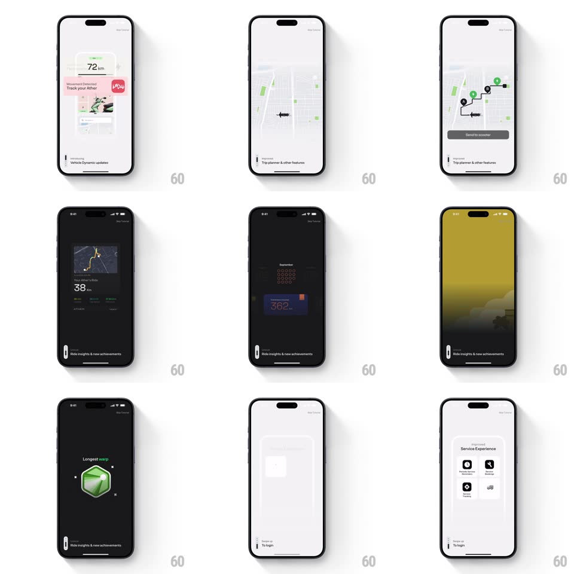

Media
Frame-by-frame

Rebuild this animation 1:1: Ather's onboarding tutorial - a cinematic sequence sweeping through live dashboard, theft alert, trip planner, achievements, and service features.

Rebuild this animation 1:1: Ather's onboarding tutorial - a cinematic sequence sweeping through live dashboard, theft alert, trip planner, achievements, and service features. ## Integration Integration: stack-agnostic spec - springs given as stiffness/damping, timed motions as duration + curve; map every value to your framework and animation library of choice. ## Scene A paged tutorial over alternating light/dark backgrounds: the dashboard (range readout "105 km", scooter image), a "Movement Detected - Track your Ather" alert card, a trip-planner map with a scooter pin, a first-person road animation, an August achievement dot-grid, a green city-silhouette stats screen, hexagon badges, and a Service Experience icon grid. A progress indicator and Skip sit at the edges. ## Motion spec Pattern: auto-advancing feature carousel with per-scene micro-animation. - Pages auto-advance every ~2.5s with a horizontal slide (1:1 if swiped; otherwise 300ms ease-out), progress pill stretching along the bottom bar. - Dashboard page: the range number counts up to 105 km (odometer roll, 800ms) and the scooter image slides in from the right (350ms). - Alert page: the red notification card slides down over the dashboard mock (spring ~380/24) with a soft bell-shake (rotate +-3 degrees, 300ms). - Map page: the scooter pin drops onto the map (translateY -30px to 0 + bounce, spring ~420/20) and a route line draws (stroke-dash, 600ms). - Road page: dashed lane markers stream toward the viewer (loop, 800ms per dash cycle) in a perspective road. - Achievements: the dot grid fills row by row (40ms per dot, scale 0.6 to 1) and hexagon badges flip in (rotateY 90 to 0, 400ms, 100ms stagger). - Final page: service icons pop in a 2x2 grid (scale 0.7 to 1, spring ~440/22, 70ms stagger) before "To login" fades up. ## Calibration - Each page's micro-animation completes before auto-advance - no scene leaves mid-motion. - Dark pages and light pages alternate; keep the contrast rhythm. ## Reduced motion Pages crossfade; counts and draws resolve instantly. ## Don't miss - The alert card's red is the alarm accent - the only red in the sequence. - The progress pill is the user's clock; it must fill smoothly, not step.